RICH SOCIAL EXPERIENCE
Improving existing UX and delivering rich communication tools to users for a smooth gaming experience
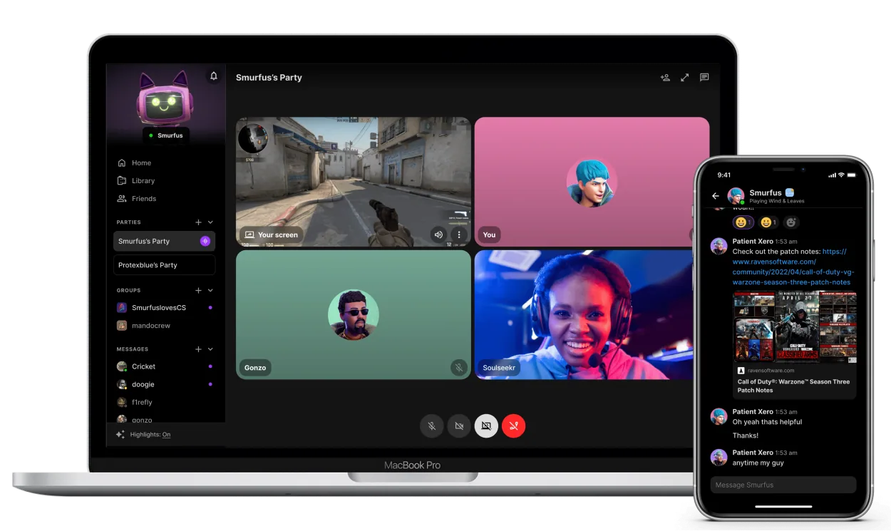
Overview & my role
As a lead designer for the Comms pod, I was tasked with improving the voice chat tools for gamers. Our goal was to enhance the existing chat interface and introduce new features for a seamless gaming experience. To achieve this, I worked with the product manager, engineering manager, and director to create a roadmap for the Comms pod. We identified 18-20 features and improvements to enhance basic player interactions and community engagement. To ensure that our work was prioritized and not hindered by technical limitations, I decided to focus on small fixes first, while simultaneously designing larger features such as video sharing, emojis, gifs, notifications, and file uploads. I also updated some of the interfaces based on the latest research studies and user feedback, building upon the work of previous designers.
Gamers need rich communication tools for seamless gaming experience and uninterrupted player interaction.
Problems in the existing interface
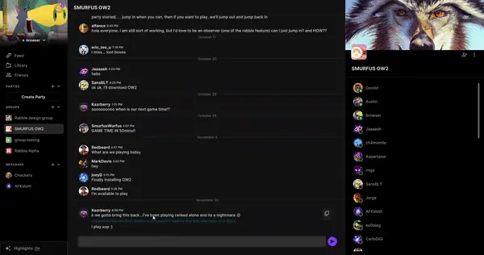
Slow and rough UX
Rabble was made with unity and due to unity’s limitations, it lacked intuitive interactions resulting in delayed, incoherent and poor user experience.
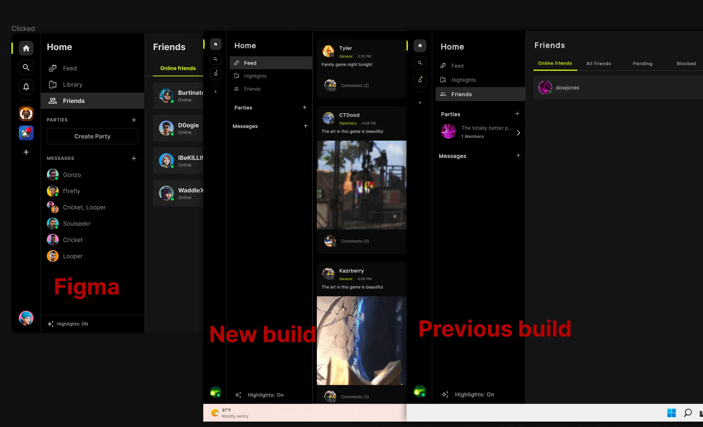
Ineffective translation
The voice-chat interface faced aesthetics challenges in accurately translating Figma designs into Unity, due to the differences in its rendering techniques and units of measurement. Additionally, lack of support resulted in certain interactions being impossible to implement.
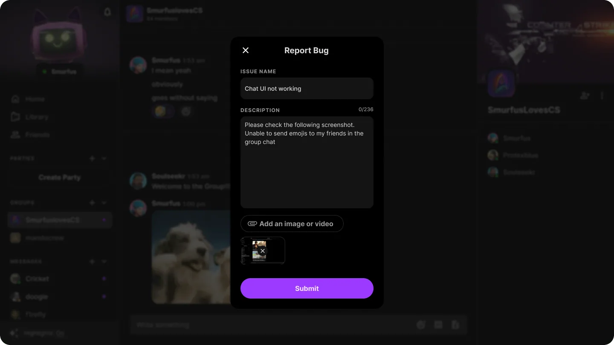
Unstructured feature design /development process
With ongoing feedback collection, new bugs and issues arose, requiring us to be agile in prioritizing problems based on the core user loop.
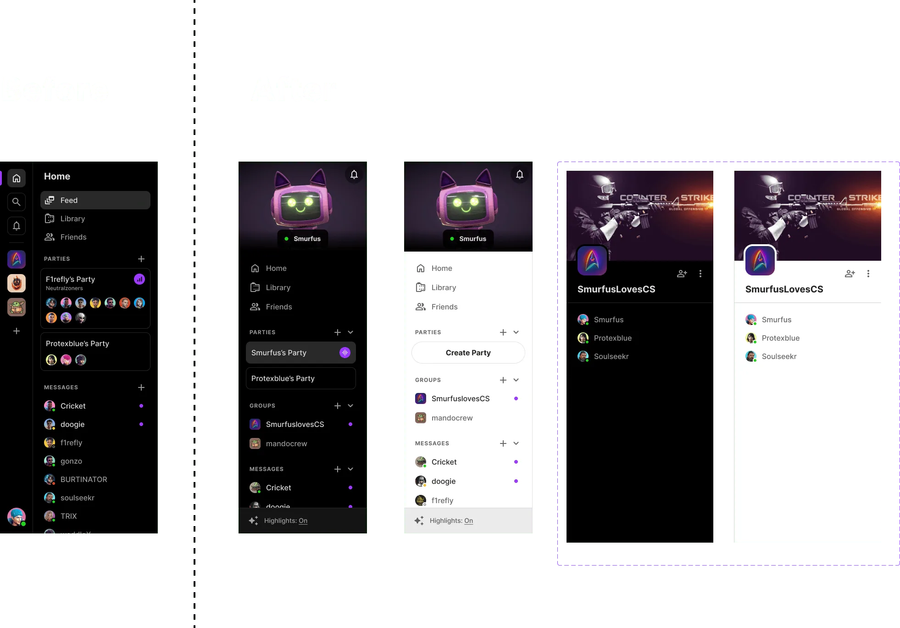
Obsolete designs
The change in business requirements, specifically the alteration in the navigation bar, and updated research studies highlighted the necessity to continually update the designs with the latest insights and requirements.
Inefficient and outdated design system
Designs were not optimized for mobile devices, and there were insufficient guidelines for responsive states, device sizes, light mode, and edge cases. The documentation and design system components were also found to be outdated.
Establishing the guiding principle
Easy to use and intuitive
Rabble, as a consumer product, should provide a delightful and enjoyable user experience to gamers, rather than just being a basic voice chat application.
Scalable and adaptable To accommodate the expected billions of gamers using Rabble, it is crucial to design the platform to be scalable to meet future user needs and adaptable to any device for seamless usage.
Minimal engineering efforts To accommodate the expected billions of gamers using Rabble, it is crucial to design the platform to be scalable to meet future user needs and adaptable to any device for seamless usage.
Visual Delight
To overcome the limitations of the Unity technology stack, I initiated a project to document all UI animations and basic interactions, which had previously proven challenging to implement, in order to enable collaborative efforts among Rabble's engineers.
Design system
To promote consistency across teams and improve the efficiency of the design and implementation process, I initiated the maintenance of an internal design system.
01
Feedback panel
The Rabble team faced difficulties in managing and tracking feedback received through Slack channels after releasing the product to Unity users. To address this issue, a centralized platform was required to organize and prioritize the important feedback, bugs, and user needs, in order to enhance the overall user experience.
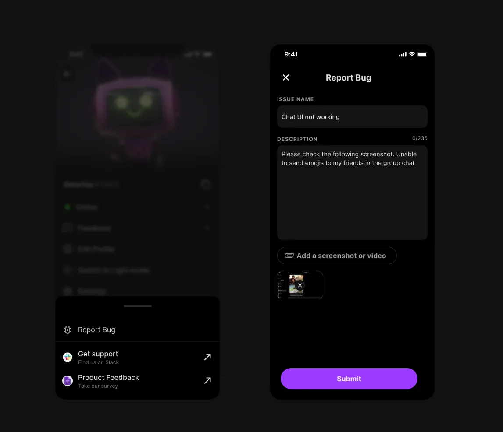
Solution
I proposed an internal feedback panel for users to log their bugs, needs and other feedback for the app. Users can attach images related to issues being logged for more clarity. This helped Rabble team to organize and track feedback easily.
02
Mini profile widget
Upon joining the community, users encountered difficulties adding like-minded individuals as friends directly from the chat interface. The conventional process required a username and 4-digit code, but the code was not visible in the chat interface, leading users to request it from others, causing a time-consuming and frustrating experience.
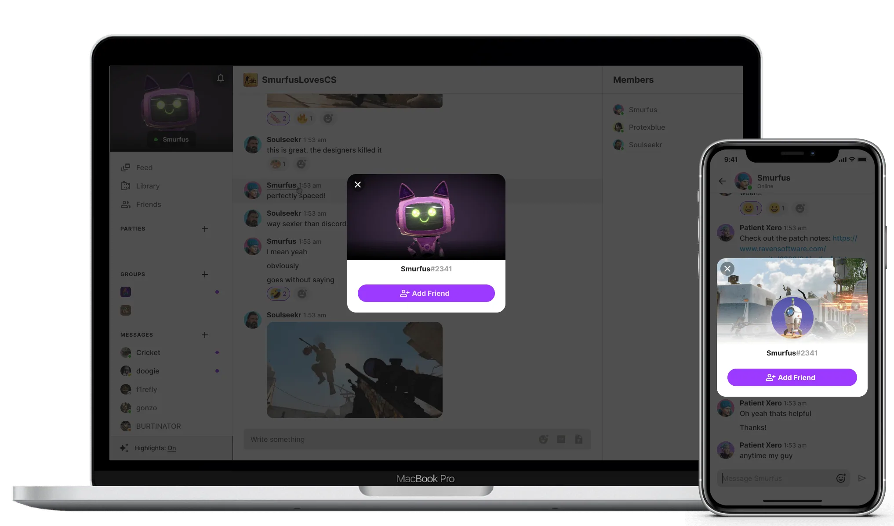
A compact profile view was created, accessible as a modal by clicking on any username in the chat, to facilitate a quick and easy way for users in the community to add each other as friends.
03
Emojis
In response to user requests, emojis were added to bring a playful element to daily conversations, which are a crucial component, especially for gamers. While the initial design was done by another designer, I refined the layout, addressed edge cases, created prototypes with interaction and UI animations, and ensured scalability and adaptability across various scenarios.
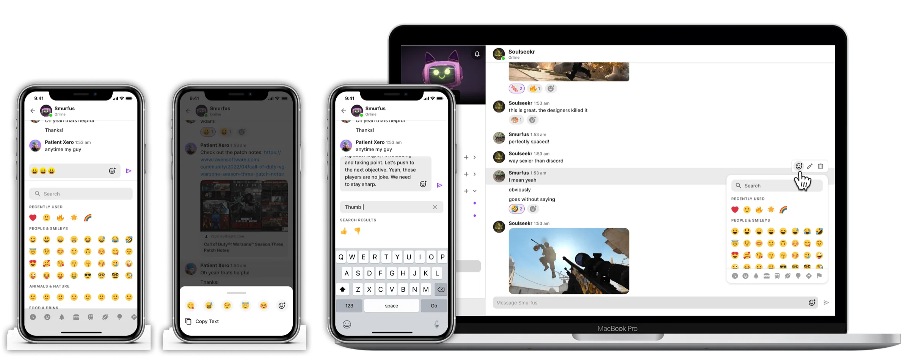
04
Supporting URL links
Gamers frequently share gaming-related content, such as news and gameplay clips from YouTube, Twitch, and other streaming websites, within their community. Typically, they share links as it provides easy access to the content. However, Rabble, as a gaming platform, lacked support for URLs, which was a primary method for gamers to share content.
I enhanced the existing URL design by incorporating support for multiple links, adding a preview feature for multiple links, and adopting an adaptive design to improve the user experience.
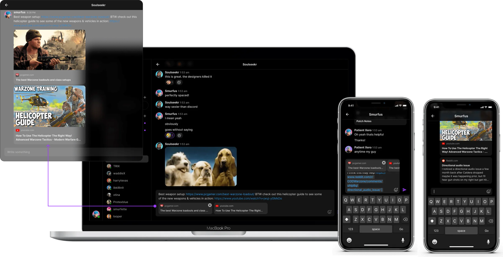
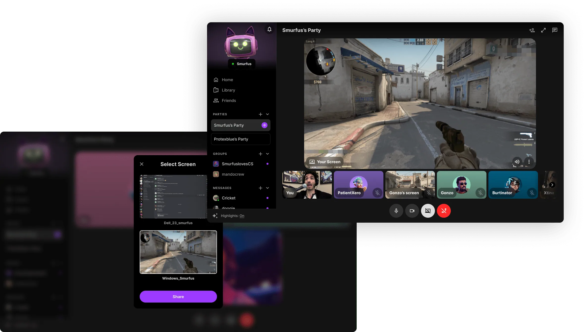
05
Screenshare
Many gamers felt isolated when their friends were engaged in a game, with no option but to wait for the next round to begin. To address this issue, we introduced a screen share feature, allowing gamers to observe ongoing games and be a part of the experience while they wait for their turn.
As part of this initiative, I designed the spectate layout and a method to maximize or minimize the most engaging screens.
06
Game presence
In response to user requests, emojis were added to bring a playful element to daily conversations, which are a crucial component, especially for gamers. While the initial design was done by another designer, I refined the layout, addressed edge cases, created prototypes with interaction and UI animations, and ensured scalability and adaptability across various scenarios.
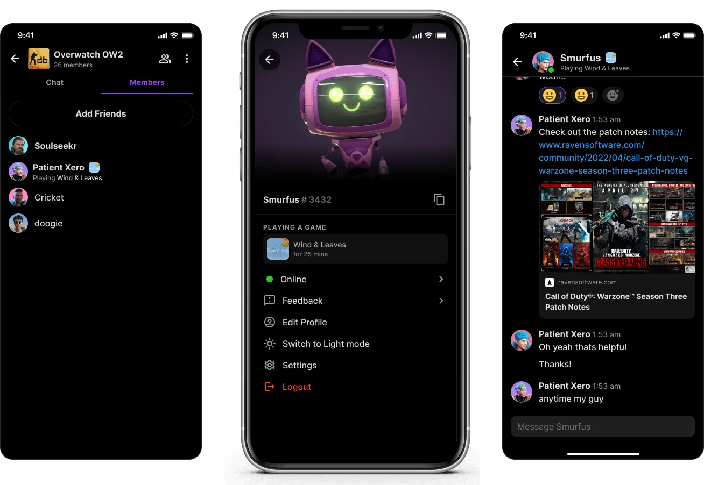
07
Project Delight
Due to the limitations of the Unity tech stack, standard UI styles and animations were challenging to implement in Rabble. To address this, I created a comprehensive design documentation for all UI elements in communication to provide a joyful and intuitive user experience for users. In addition, I also took the initiative to critically analyze components, and improve them based on factors such as responsiveness, functional requirements, and consistency.
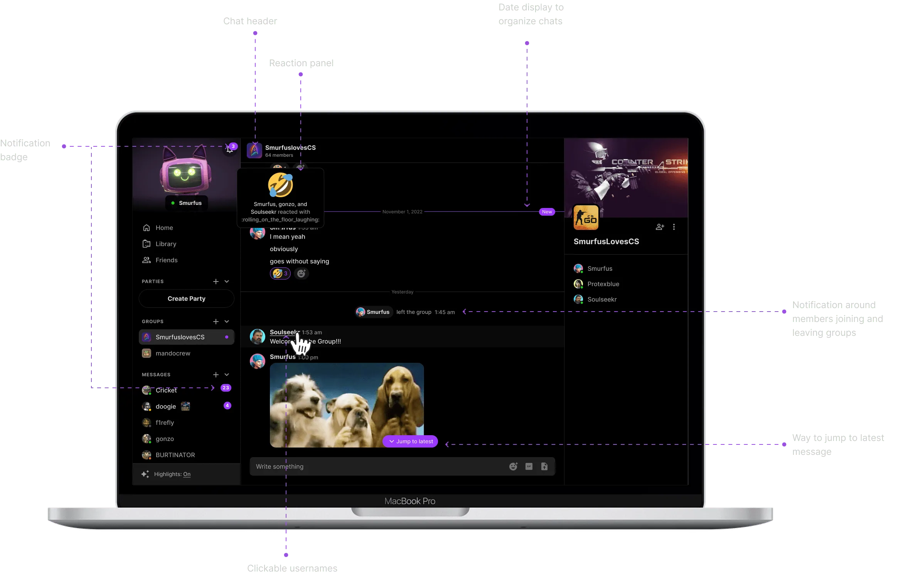